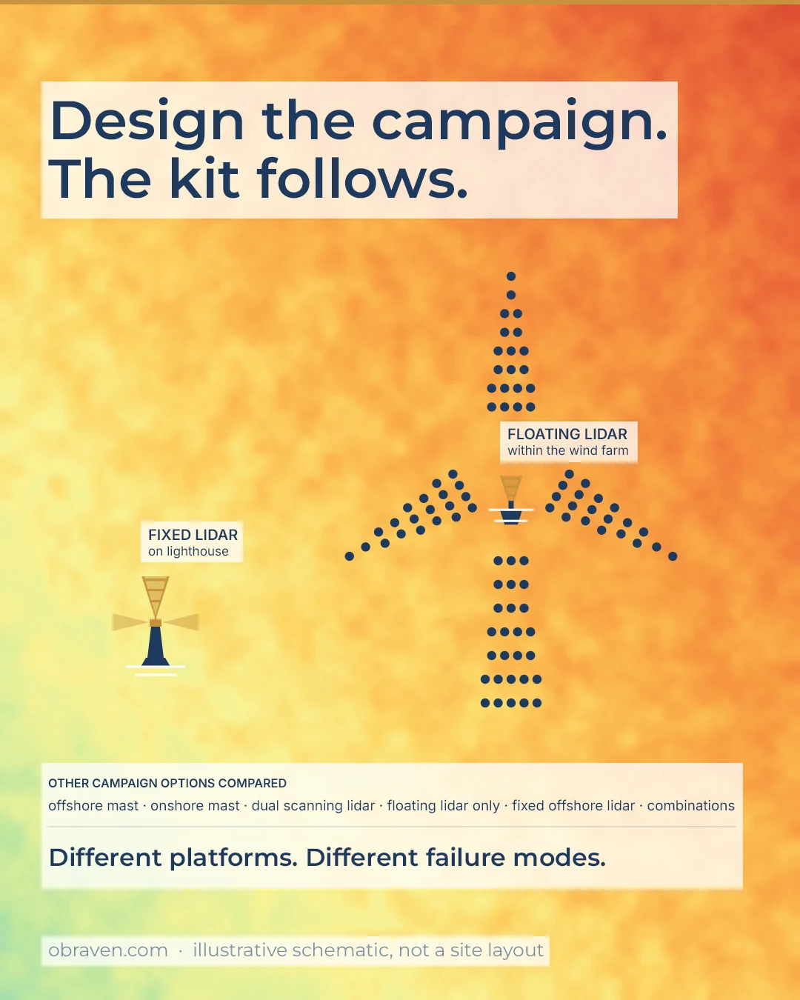

The idea in brief
The problem
“Do we really need all of these measurements?” A mast or lidar proposal arrives with sensors, heights, backups, and optional extras – or a scope starts with “procure a floating lidar”.
Why it happens
The campaign is specified from the equipment end. What each item is for, and what is lost if it goes, stays unclear.
What to do
Work backwards from the uses the data must support, compare whole campaigns on uncertainty, robustness, programme, and lifetime cost, and stage what can wait.
Work backwards
First published on LinkedIn, 17 September 2026.
“Do we really need all of these measurements for the wind project?”
Quite a normal question when a mast or lidar proposal lands with a list of sensors, heights, backups, and optional extras.
My answer would be: work backwards first.
What will this campaign need to support, now and later? A first resource assessment, energy yield, site suitability, flow modelling across the layout – often several of these. Once those uses are clear, the equipment list starts making more sense.
On a simple site, one well-placed mast may genuinely be enough.
On another project, an extra measurement height, redundant sensor, second location, or lidar may be doing something specific: protecting data availability, reducing extrapolation, covering a different part of the layout, or capturing information that will be difficult to recover later.
That is what I would want to understand before discarding an “optional” item because it looks expensive.
Configuration and metadata matter too. If the supplier, software, or team changes, the record still needs to preserve which sensor was on which channel, at what height, which calibration parameters applied, over what period, and so on. The IEA Wind Task 43 WRA Data Model gives that a machine-readable structure.
Not everything has to go in on day one either. If there is time, equipment can sometimes be added or moved later, provided the first set-up leaves enough overlap to cross-check and extend the records.
Other workstreams may be able to use the same campaign. An onshore mast can sometimes host ecology monitoring; offshore, the same campaign or platform may also support some metocean or other design needs. The requirements may line up well, or very little, so it is worth checking before the scope is fixed.
So when reviewing a measurement scope, I’d ask:
- What does this measurement help the project do?
- What do we lose if we remove it?
- Can we recover that information later?
- Will the data still be understandable and usable when it changes hands?
You may still cut it. But know what you are giving up.
Campaign before device
First published on LinkedIn, 27 August 2026.
“Why measure at a lighthouse when the floating lidar can be deployed within the turbine array?”

I worked on an offshore wind measurement campaign a few years ago where that question took a fair bit of thinking.
The floating lidar had the obvious advantage: deployed close to the turbines, it reduces spatial extrapolation, the modelling step from the measurement point out to the turbine positions.
The lighthouse was farther away, so spatial extrapolation had more distance to cover. But it was already there and it did not move. That avoided buoy motion effects in the turbulence intensity measurement. If needed, it could also stay longer for relatively little extra cost, which helps the long-term correction.
So we started with the campaign, not the device.
We compared fixed offshore and onshore options, dual scanning lidar, different floating lidar arrangements, and combinations. Each had its own uncertainty, data availability, access and recovery risk, programme, and cost.
Floating lidar uncertainty was still material to the choice then, so we tested a range – different assumptions favoured different campaigns. (That has moved on since – several systems have now reached Stage 3 maturity, and the 2025 update added a '+' designation for TI assessment.)
Then there was the weather. Getting to the lighthouse meant a helicopter onto a rock beside it. Sea state, tides, and daylight left only a narrow window for safe access each year. The measurement system had to be able to keep running until the next access window. That could mean two units, two power supplies.
The buoy faced the same weather constraint. If it failed at the wrong time, recovery, repair, and redeployment could take months. Months of data gone, and a season missing from the record.
So redundancy mattered, as did O&M strategy and enough campaign duration to recover from a failure without losing full seasonal coverage. Different platform, different way of failing. At least two data streams we could cross-check.
It was important to keep a measurement failure off the project’s critical path. And later on, someone acting for the lenders reviews the measured dataset and decides whether it supports the energy estimate. A dataset with gaps, or one season short, is harder to defend -> higher uncertainty -> lower P90/P50 ratio -> potentially less debt capacity.
In the end, we picked the campaign on net benefit and then built the risk design around it. The winner: a floating lidar within the turbine array and a fixed lidar on the lighthouse.
Today, I still see offshore measurement scopes starting with “procure a floating lidar”. Which may well be the right answer – campaign design should tell you. Set out credible scenarios. Compare uncertainty, robustness, programme, and lifetime cost. Pick the campaign. Then write the tender.
| Compare each credible campaign on | What it captures |
|---|---|
| Uncertainty | Spatial and vertical extrapolation, sensor class, long-term correlation |
| Robustness | Data availability, redundancy, failure modes, recovery time |
| Programme | Lead times, access windows, minimum duration for seasonal coverage |
| Lifetime cost | Supply, installation, O&M, relocation, extension, and decommissioning |
A campaign that gets approved
First published on LinkedIn, 11 June 2026.
I used to think the safest wind measurement recommendation was usually the most robust one.
That instinct still makes sense to the engineer in me.
Design it properly. Follow best practices. Cover the edge cases. Measure at the right heights. Avoid leaving gaps for someone else to find years later.
There is a lot of value in that.
A strong campaign can support layout design, turbine selection, financing, due diligence, procurement, and operational questions. It can save a project from lost time and painful rework.
But projects do not develop in a straight line.
Budgets are constrained. Planning risk is still there. Grid, land, access, turbine availability, and investment appetite can and do change. Sometimes the project area changes. Or the layout. And sometimes the project stops before the full value of that campaign is realised.
I have also seen projects move away from the original area late in development. When that happens, the technically “best” early campaign may no longer look like the best use of money.
This is where measurement strategy becomes more than an engineering design exercise. The harder question is usually something like:
What level of resource de-risking does this project actually need now?
For the approval point in front of the team.
Earlier in my career, I would often lean towards recommending more rather than less. Partly because I could see the future questions coming. And from a resource perspective, it is easy to think: measure properly now, de-risk the site early, avoid wind evidence becoming the bottleneck later.
Often, that is good advice.
There are also cases where the recommendation becomes too expensive, too early, or too hard to approve. Then the result can be worse than a compromise campaign.
A perfect measurement campaign that nobody signs off is still no campaign.
A staged approach may be the better answer:
- start with a proportionate campaign;
- define what it can and cannot support;
- set clear trigger points for adding a mast, lidar, extending the measurement period, adding measurement heights, or doing deeper analysis later;
- keep later project gates in view without assuming that every future question must be answered today.
That requires technical discipline. And also empathy for the development, finance, and commercial teams managing real constraints around the project.
The most useful recommendation is often the one that gets approved, reduces the uncertainty that matters most, and leaves the project in a stronger position for whatever comes next.
Some evidence has to be built before the project needs it
First published on LinkedIn, 18 June 2026.
At a Start Your Own Business session yesterday evening, one question stayed with me:
How urgent is the problem you are solving?
It was meant as a marketing question. I thought about wind projects, of course.
You often find resource, yield, layout and measurement work in that “important, but not urgent yet” part of the Eisenhower matrix.
Nobody is really demanding it early on. The pressure is usually somewhere else: land, planning, grid, access, budget, turbine availability, momentum.
So it is left for later. Which sometimes is the right call. I have argued before that the right scope depends on the project stage, not some idealised version of the project.
Timing matters though.
You can compress analysis. You can turn around a new layout iteration or a scenario run really quickly if you have to.
But a measurement campaign is different.
Especially on more complex sites, where one device for one year may not be enough. You may need more locations, more height coverage, a longer measurement period, or a different mix of equipment. Deployment risk can also be real: vandalism, access delays, slow intervention times, spare equipment taking longer than expected.
Those things do not respond well to last-minute urgency.
If resource and energy-yield work only becomes urgent when the investment case is being assembled, the project will still get an energy yield number. Of course it will. But it may have lost part of the opportunity to reduce the uncertainty behind that number.
That can show up in the P90/P50 relationship – directly impacting the revenue line. It can also show up in how comfortable people feel when assumptions start carrying real commercial weight.
It can put resource and yield work onto the critical path at the exact moment when the project has least patience for it.
A small early resource assessment scope can be the more pragmatic move.
A focused review of what the current data can support, e.g. layout and turbine related questions. A measurement strategy with trigger points, rather than a campaign designed for every possible future. A campaign which matures as the project envelope becomes clearer.
That, to me, is the point of treating resource and yield properly before they become urgent.
Small enough not to overburden the project.
Early enough not to lose the chance to reduce uncertainty.
Because once the project is asking for certainty, it may be too late to start building the evidence behind it.
Some evidence has to be built before the project needs it.
Where this applies – and where it does not
Applies to new onshore and offshore campaigns, to reviews of supplier proposals, and to campaigns already running that may need extending, relocating, or closing. Equipment supply, installation, and field maintenance stay with appointed measurement specialists; the point here is the strategy, specification, and review on the owner’s side.
Questions for your next project meeting
- Which later uses – EYA, site suitability, layout flow modelling, financing – must this campaign support?
- Have we compared whole campaigns, or only devices?
- If one platform fails in winter, how long until we recover the data, and what does the gap cost?
- Which items could be added later, and what overlap would that need now?
Is this question live for you?
Discuss a project